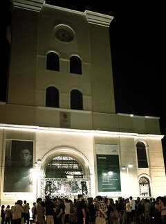

Dois dos pontos do Recife Antigo
Torre Malakoff
A Torre Malakoff, localizada no Recife Antigo, na cidade do Recife, foi batizada com o nome de uma das torres da fortaleza de Sebastopol, durante a Guerra da Criméia (1853-1856).
História
Um decreto provincial de 1 de janeiro de 1834 criava o Arsenal da marinha, tendo o projeto arquitetônico sido feito em 1837. Em 1853 foi iniciada a construção do então chamado Portão Monumental do arsenal da Marinha, na proximidade do Porto do Recife.
Na época da sua construção, havia muita notícia veiculada pelo Diario de Pernambuco a respeito da Guerra da Criméia, com destaque para o foco de resistência em defesa da colina e da torre fortificada de Malakoff, o que gerou grande interesse no Recife e em todo o Estado de Pernambuco. Segundo o médico e historiador Pedro Veloso Costa, em seu livro "A Marinha em Pernambuco" (Fundarpe, 1987), o batismo da torre com o nome Malakoff foi dado pela própria população, que na época acompanhava a longínqua batalha pelo jornal.
Quando os arsenais da Marinha foram extintos com o início da República, a Torre foi transferida para o patrimônio do Porto, sendo depois abandonada e ameaçada de extinção. A população, sob a liderança de instituições literárias e culturais do Recife, a exemplo do Instituto Arqueológico, Histórico e Geográfico de Pernambuco (IAHGP) e o jornal Diário de Pernambuco, mobilizou-se contra a demolição, utilizando como exemplo a própria resistência de Malakoff na Guerra da Criméia, sendo então, utilizada como centro de irradiação da Cultura na cidade.
Ali funcionou, por algum tempo, um observatório astronômico que depois foi usado para estudos baseados na ciência.
Museu do Frevo
O Paço do Frevo é um espaço cultural dedicado à difusão, pesquisa, lazer e formação nas áreas da dança e música do frevo localizado na cidade do Recife, capital de Pernambuco, Brasil. Surgiu através de uma parceria entre a Prefeitura do Recife, a Fundação Roberto Marinho, o IPHAN e o Governo Federal.
Um dos espaços voltados à cultura mais solicitados de Pernambuco ao lado de museus como o Instituto Ricardo Brennand, o Cais do Sertão e a Oficina Cerâmica Francisco Brennand, o Paço do Frevo recebeu mais de 120 mil visitantes em seu primeiro ano de funcionamento.
História
Inaugurado no dia 9 de fevereiro de 2014, o Paço do Frevo tem museografia assinada pela diretora de teatro e cenógrafa Bia Lessa.
Instalações físicas
O Paço do Frevo funciona no antigo prédio da Western Telegraph Company, construído em estilo neoclássico tardio inglês e tombado pelo IPHAN.